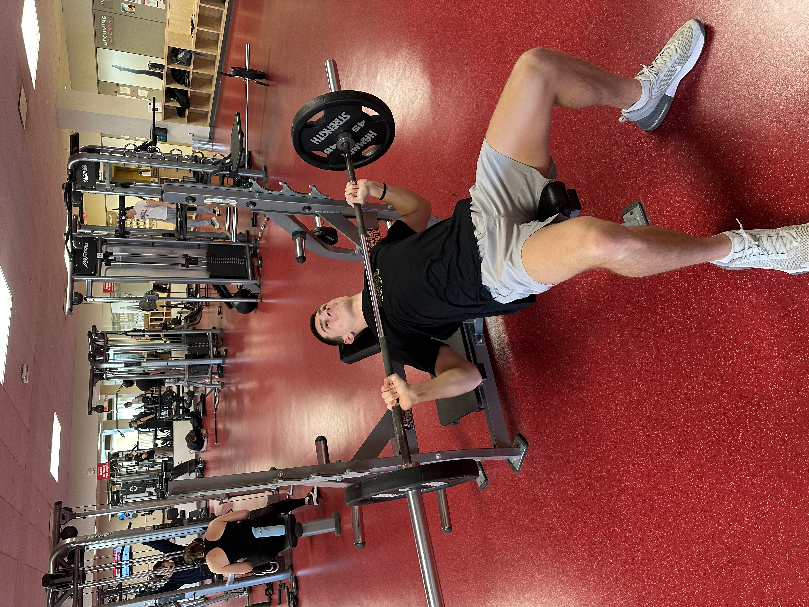
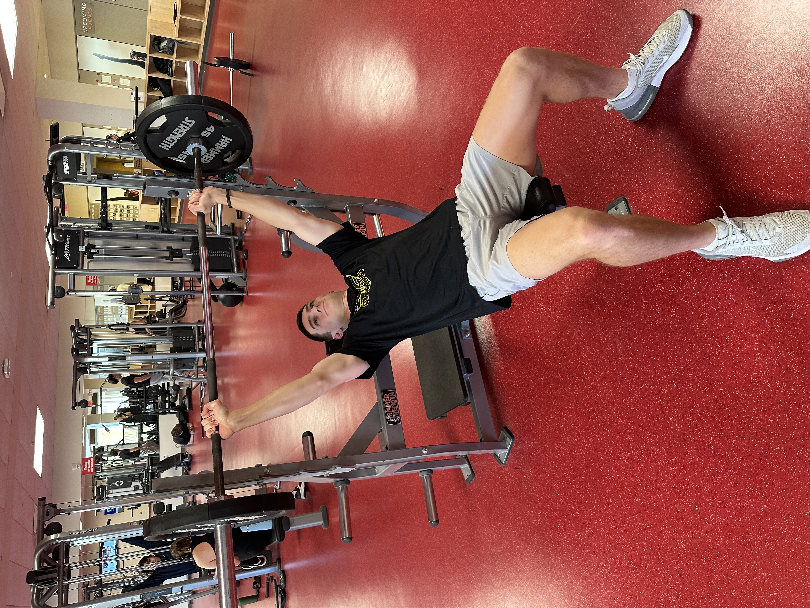
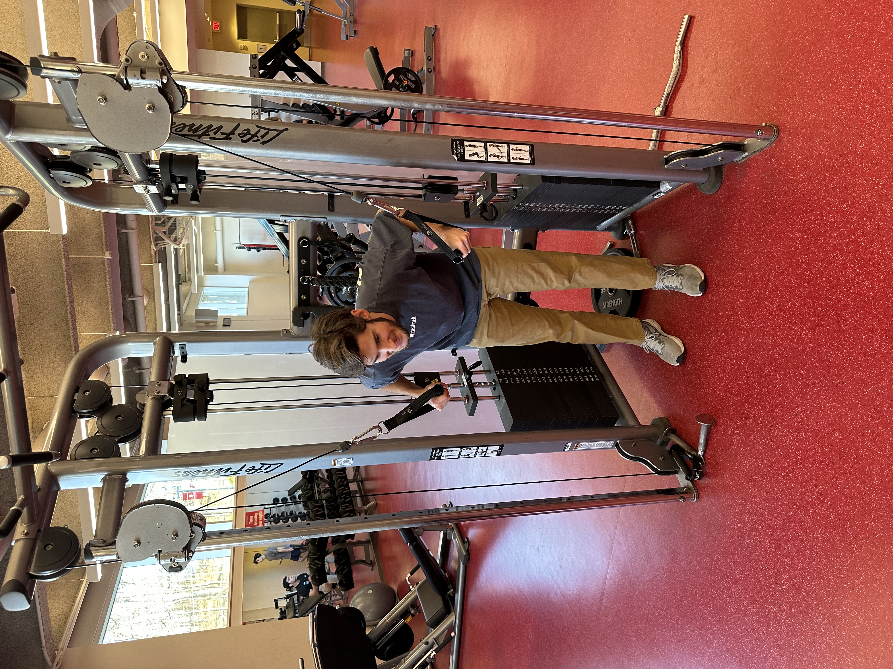
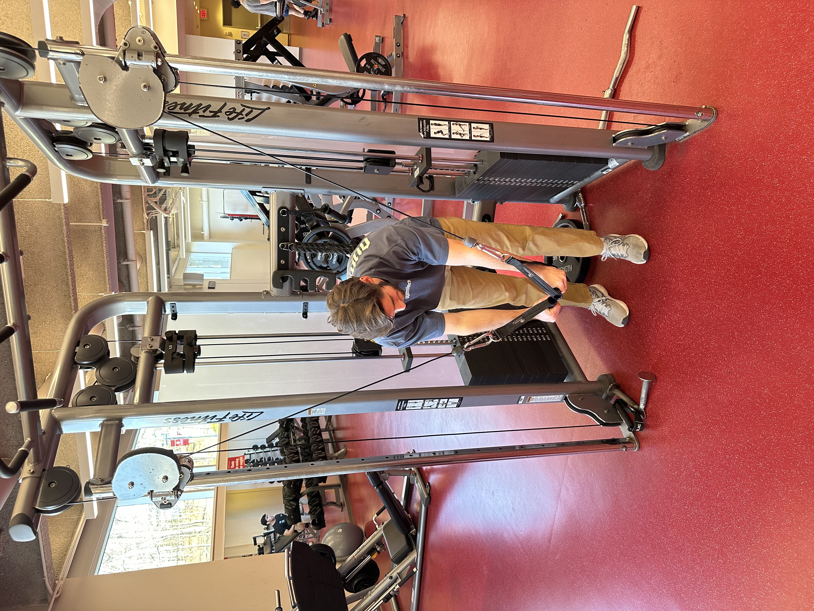
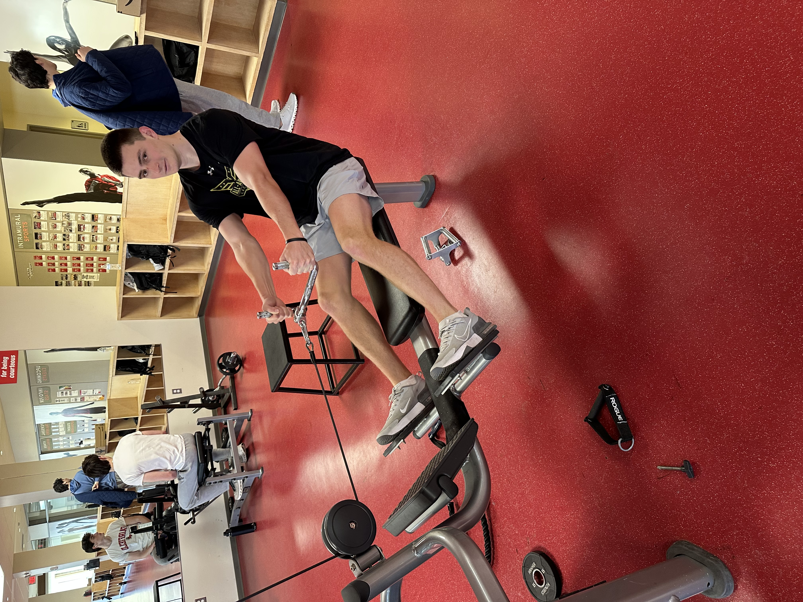
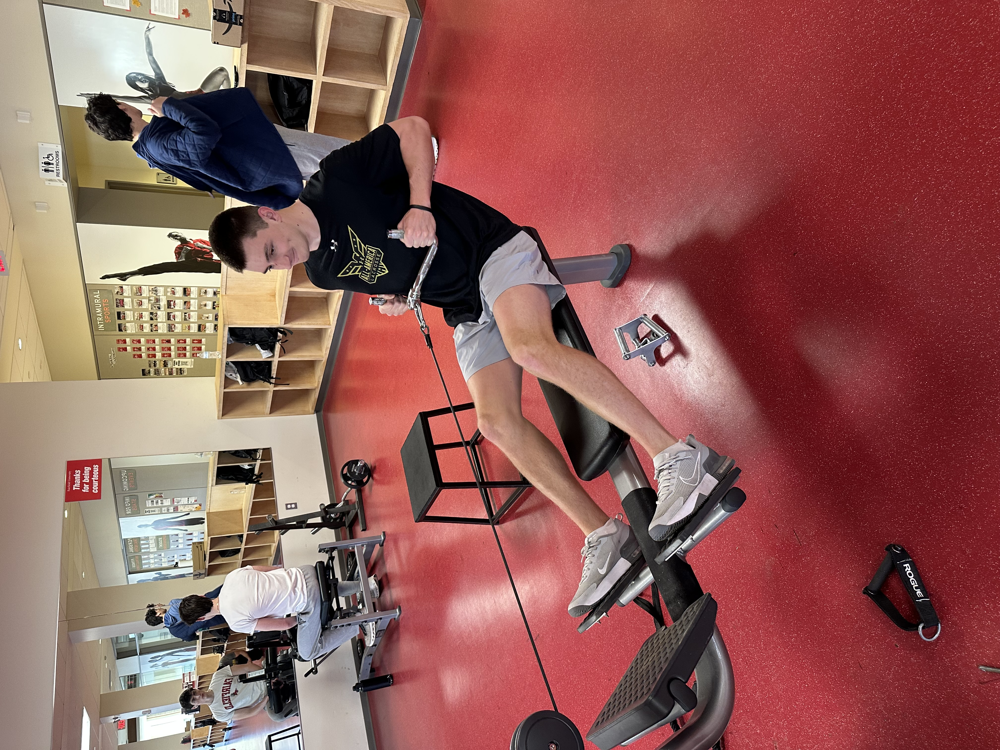
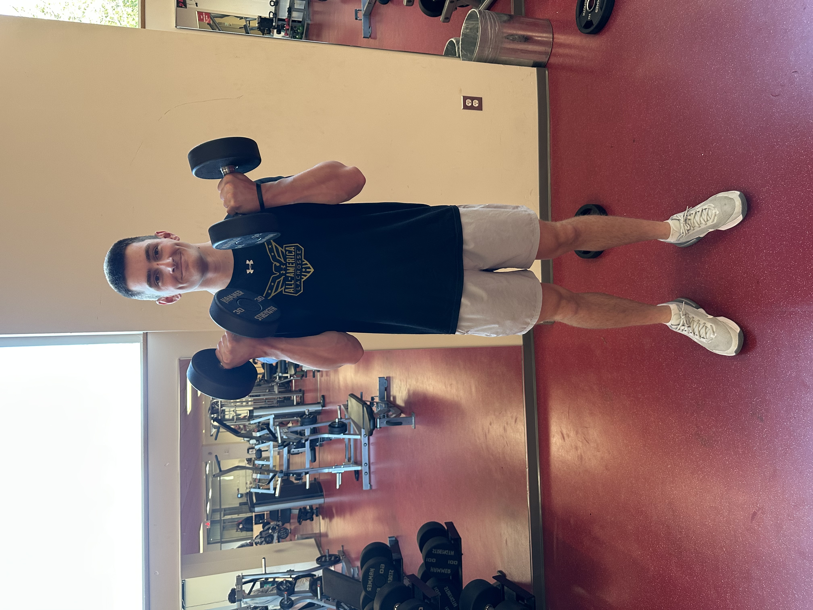
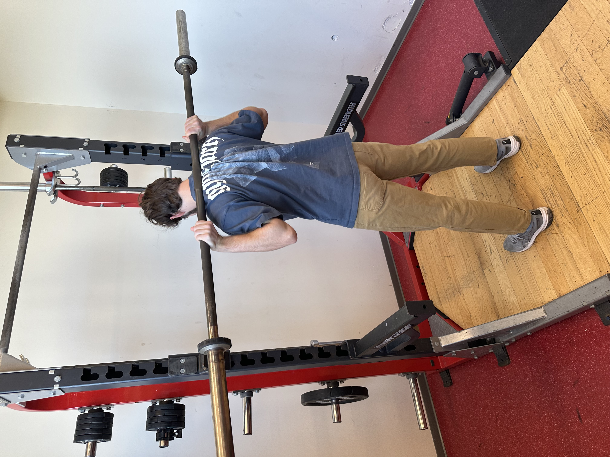
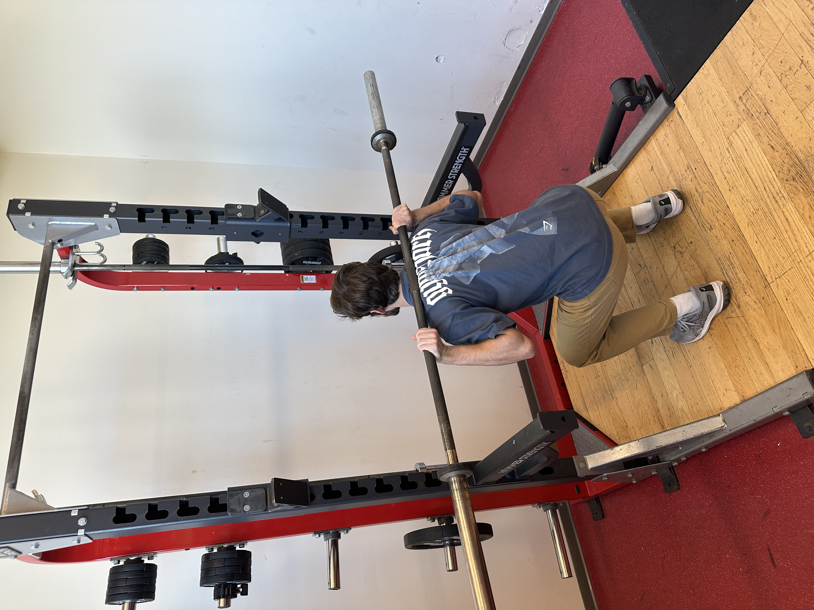

Workouts
| Muscle Group | Exercise 1 | Exercise 2 | Exercise 3 | Exercise 4 | Exercise 5 |
|---|---|---|---|---|---|
| Chest | Bench Press | Incline Bench Press | Dumbbell Bench | Cable Fly | - |
| Back | Bent-Over Row | Pull Ups | Iso Lateral Row | Lat Pulldown | Seated Row |
| Biceps | Bicep Curl | Hammer Curl | Preacher Curl | Barbell Curl | - |
| Triceps | Skull Crusher | Cable Overhead Extension | Cable Push Down | Push Down Machine | - |
| Shoulders | Egyptian Raise | Rear Delt Fly | Arnold Press | Strict Press | Push Press |
| Legs | Squat | Split Squat | Goblet Squat | Leg Extension | Leg Press |
| Core | V-Ups | Oblique V-Ups | Sit-Ups | Leg Raises | - |
Chest
Bench Press
The bench press is one of the best compound lifts for building chest, triceps, and shoulder strength. Keep your feet planted, your shoulder blades pinned, and lower the bar under control. Drive the weight up with power while keeping your elbows tucked slightly toward your sides. Focus on pushing through your chest rather than just your arms for maximum strength.
↑ Back to top

Incline Bench Press
The incline bench press targets the upper chest and shoulders, helping build a balanced chest. Set your bench to a moderate incline and lower the bar toward the upper chest. Press upward smoothly, keeping your elbows slightly tucked. Avoid arching excessively and keep your core tight throughout the lift.
↑ Back to top

Dumbbell Bench Press
The dumbbell bench press helps build stability and allows for a deeper stretch in the chest. Lower the dumbbells slowly and press upward evenly with both arms. Keep your elbows from flaring too wide to protect your shoulders. Squeeze your chest at the top of each rep for maximum activation.
↑ Back to top

Cable Fly
Cable flyes provide constant tension and help shape the chest muscles. Keep a slight bend in your elbows and bring your hands together in a smooth arc. Focus on squeezing your chest at the top instead of just touching your hands. Move slowly and avoid using momentum so your chest stays under constant tension.
↑ Back to top


Back
Cable Row
The cable row develops the upper and mid-back while improving overall pulling strength. Keep your torso stable, hinge at your hips, and pull the bar toward your ribs. Lead with your elbows and squeeze your shoulder blades together. Maintain a flat back throughout the movement to avoid lower back strain.
↑ Back to top

Pull Ups
Pull ups are a foundational bodyweight exercise that build back width and upper-body strength. Keep your core engaged and avoid swinging or kipping upward. Pull your chest toward the bar while keeping your elbows close to your sides. Lower slowly to build strength through the entire range of motion.
↑ Back to top

Iso Lateral Row
The iso lateral row trains each side independently, helping correct muscle imbalances. Keep your chest against the pad and pull with your elbow rather than your hand. Squeeze your back at the end of each rep to maximize contraction. Control the weight on the way down for better muscle engagement.
↑ Back to top

Lat Pulldown
The lat pulldown targets the lat muscles and helps improve vertical pulling strength. Sit tall and pull the bar toward your upper chest, keeping your elbows pointed down. Avoid pulling behind your neck to protect your shoulders. Control the bar on the way up to maintain tension throughout the movement.
↑ Back to top

Biceps
Bicep Curl
The bicep curl isolates the biceps and helps build arm size and pulling strength. Keep your elbows tight to your sides and curl the weight without swinging. Squeeze the biceps at the top, then lower slowly for maximum muscle activation. Use strict form to keep tension on the arms instead of relying on momentum.
↑ Back to top

Hammer Curl
The hammer curl targets the brachialis and forearms, helping increase arm thickness. Keep your palms facing inward and lift the weight in a controlled motion. Avoid leaning back or using your shoulders to lift the weight. Lower the dumbbells slowly to challenge your grip and stabilizer muscles.
↑ Back to top

Preacher Curl
Preacher curls lock your arms in position, forcing strict bicep activation. Keep your chest pressed against the pad and curl the weight smoothly. Lower fully for a strong stretch before curling up again. Use lighter weight and perfect form to get the best results from the movement.
↑ Back to top

Barbell Curl
The barbell curl allows you to load the biceps with more weight than dumbbells. Keep your elbows fixed and avoid swinging your torso backward. Curl the bar upward in a smooth arc and control it on the way down. Focus on slow, strict reps to maximize muscle tension and growth.
↑ Back to top

Triceps
Skull Crusher
Skull crushers isolate the triceps and help add size to the back of the arms. Lower the weight toward your forehead while keeping your upper arms still. Press the weight back up using only your elbows, not your shoulders. Keep your elbows slightly tucked to reduce joint stress.
↑ Back to top

Cable Overhead Extension
Cable overhead extensions stretch the triceps through a long range of motion. Lean forward slightly and keep your elbows pointed forward as you extend. Move the handle slowly and avoid arching your lower back. Squeeze at the top for a full contraction before lowering under control.
↑ Back to top


Cable Push Down
The cable pushdown builds all three heads of the triceps while allowing strict, controlled reps. Keep your elbows locked at your sides and push the handle straight down. Squeeze hard at the bottom to maximize triceps activation. Lower slowly and keep constant tension throughout the movement.
↑ Back to top

Push Down Machine
The tricep pushdown machine provides a stable path, letting you focus solely on pushing power. Keep your body upright and avoid leaning over the handle. Press down using only your triceps and pause briefly at the bottom. Control the handle on the way up to maintain constant tension.
↑ Back to top

Shoulders
Egyptian Raise
The Egyptian raise targets the side delts using a long range of motion with constant tension. Lean slightly away from the dumbbell to increase the stretch at the bottom. Raise the weight slowly without shrugging your shoulder. Keep your arm slightly bent and lift with the side delt, not your traps.
↑ Back to top

Rear Delt Fly
The rear delt fly strengthens the back of the shoulders and helps support good posture. Bend slightly forward and lift the dumbbells outward in a wide arc. Focus on squeezing the rear delts rather than pulling with your traps. Use slow, controlled reps to keep the movement strict and effective.
↑ Back to top

Arnold Press
The Arnold press is a shoulder-building variation that trains all three deltoid heads. Start with your palms facing you and rotate them outward as you press overhead. Keep your core tight to avoid excessive back arching. Move the dumbbells in a smooth, controlled motion for optimal shoulder engagement.
↑ Back to top

Strict Press
The strict press builds powerful shoulders by eliminating leg drive. Stand tall, brace your core, and press the bar straight overhead. Keep your glutes tight to prevent your lower back from arching. Move the bar in a straight line while keeping your elbows slightly forward.
↑ Back to top

Push Press
The push press develops explosive shoulder power by using leg drive to assist the movement. Dip slightly at the knees, then push upward forcefully to begin the press. Transfer the momentum from your legs into the bar with a smooth motion. Lock out fully at the top and control the descent to maximize strength gains.
↑ Back to top

Legs
Squat
The squat is a foundational lift that targets the quads, glutes, hamstrings, and core. Keep your chest high, sit back into your hips, and maintain a stable stance. Drive upward by pushing through your heels and keeping your knees in line with your toes. Maintain tightness throughout your torso to support your lower back.
↑ Back to top

Split Squat
The split squat improves unilateral leg strength, stability, and balance. Stand tall and lower your back knee toward the ground while keeping your torso upright. Drive upward through your front heel to engage the glute and quad. Move slowly to maintain control and prevent wobbling during the descent.
↑ Back to top

Goblet Squat
The goblet squat helps reinforce proper squat mechanics while improving core stability. Hold the weight close to your chest and keep your elbows pointed downward. Sit deep into the squat without rounding your lower back. Use this movement to practice bracing and maintaining upright posture.
↑ Back to top

Leg Extension
The leg extension isolates the quadriceps and helps strengthen the muscles around the knee. Adjust the machine so the pad rests comfortably above your ankles. Extend your legs smoothly without locking out your knees at the top. Lower the weight under control to maintain tension on the quads.
↑ Back to top

Leg Press
The leg press builds strength in the quads and glutes with less balance demand than squats. Lower the sled with control, keeping your hips pressed into the seat. Avoid locking out your knees to protect your joints. Push through your whole foot—not just your toes or heels—to keep the movement balanced.
↑ Back to top

Core
V-Ups
V-Ups target the entire abdominal region, especially the lower abs and hip flexors. Keep your legs straight and lift them while reaching your hands toward your toes. Move in a controlled motion rather than swinging yourself upward. Exhale as you rise to increase core engagement throughout the movement.
↑ Back to top

Oblique V-Ups
Oblique V-Ups focus on the side abdominal muscles and improve rotational stability. Keep your body slightly twisted and bring your elbow toward your raised leg. Avoid pulling on your neck; lift with your core instead. Use slow, controlled reps to feel the oblique contraction at the top of each rep.
↑ Back to top

Sit-Ups
Sit-ups strengthen the upper abs and help build core endurance. Keep your feet grounded and avoid pulling your head forward with your hands. Exhale as you lift your torso and inhale as you lower slowly. Focus on curling your spine to fully engage the abdominal muscles.
↑ Back to top


Leg Raises
Leg raises target the lower abs and help strengthen the hip flexors. Keep your legs straight and lift them without arching your lower back. Use a slow tempo to avoid swinging and maintain constant tension. Press your lower back into the floor or pad for better core activation.
↑ Back to top